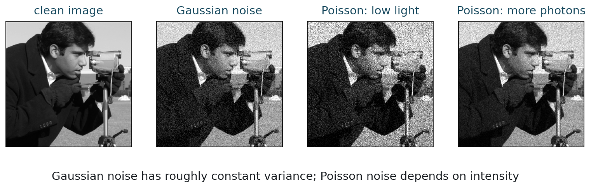
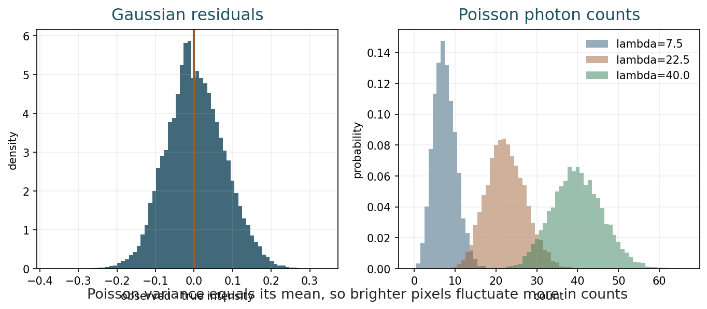
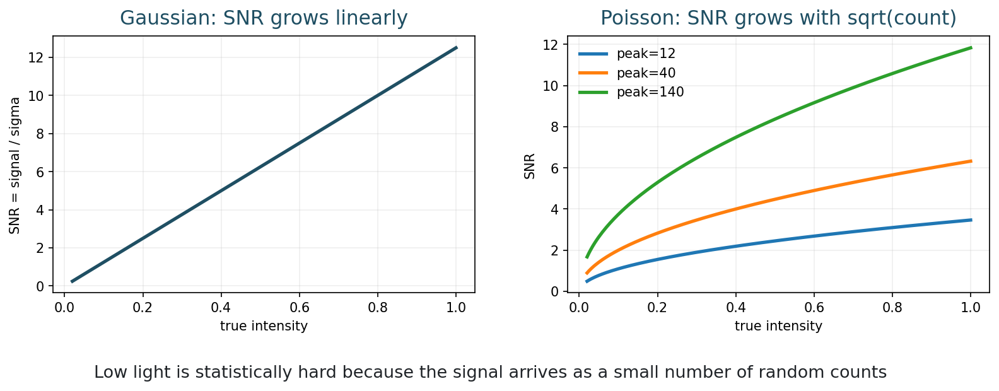
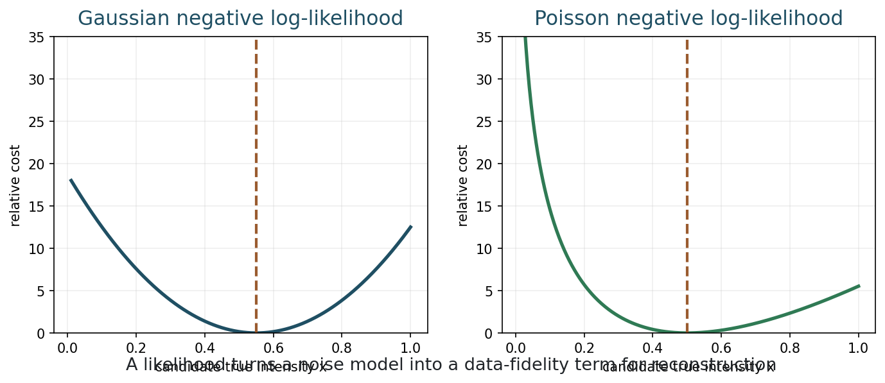
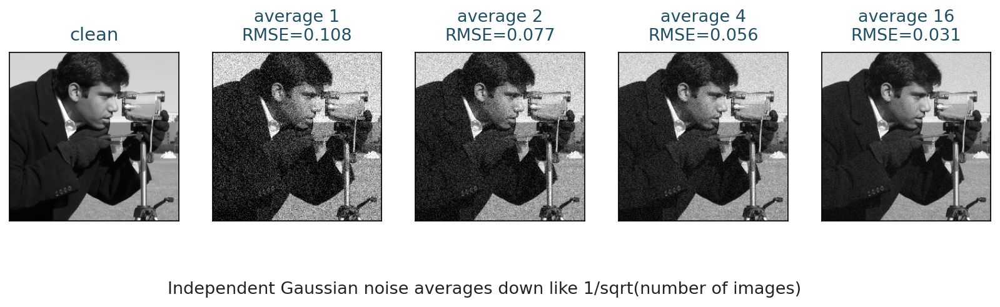

MATH 435: Mathematical Imaging - Week 4
2001-04-01
From images to statistics
If two pixels have the same recorded value, do we have the same confidence in both of them?
| Time | Work |
|---|---|
| 0-8 min | recap Fourier and inverse filtering |
| 8-18 min | observe noise in real images |
| 18-32 min | Gaussian noise model |
| 32-47 min | Poisson noise model |
| 47-58 min | SNR and repeated measurements |
| 58-68 min | likelihoods and data fidelity |
| 68-73 min | notebook activity |
| 73-75 min | exit checkpoint |
Last time we wrote a noisy deblurring model as
\widehat{y} = \widehat{h}\widehat{x} + \widehat{\eta}.
We discussed why deblurring amplifies noise. Today: what is that noise?
In imaging, we often write
y = f(x) + \eta.
x is the unknown scene or image, f is the forward imaging process, y is the recorded data, and \eta is random noise.
When the forward model is linear, we can write
y = A x + \eta.
But not every imaging process is linear. Occlusion, saturation, thresholding, and many camera pipelines can break linearity.
Uncertainty
How much should we trust a measurement?
Fidelity
Which reconstructions agree with data?
Algorithms
What objective should we minimize?
Before formulas
Look at the image

4 minutes
Compare the three noisy images.
For a pixel i, the recorded value y_i is a random variable.
The noise model specifies the probability law of y_i when the unknown true value is x_i.
A useful noise model should answer:
Additive errors
Constant variance
The simplest model is
y_i = x_i + \eta_i, \qquad \eta_i \sim \mathcal{N}(0,\sigma^2).
The parameter \sigma is the standard deviation of the noise.
These assumptions are useful, not universal.

5 minutes
If y_i=x_i+\eta_i and \eta_i\sim\mathcal{N}(0,\sigma^2), what are
\mathbb{E}[y_i\mid x_i] \quad\text{and}\quad \mathrm{Var}(y_i\mid x_i)?
Does the variance depend on x_i?
For one pixel:
p(y_i\mid x_i) = \frac{1}{\sqrt{2\pi\sigma^2}} \exp\left( -\frac{(y_i-x_i)^2}{2\sigma^2} \right).
The most likely value is x_i=y_i.
If the pixel errors are independent,
p(y\mid x)= \prod_i p(y_i\mid x_i).
Taking negative logarithms gives
-\log p(y\mid x) = \frac{1}{2\sigma^2}\sum_i (y_i-x_i)^2 + \text{constant}.
For the direct observation model y=x+\eta:
\operatorname*{argmin}_x \frac{1}{2}\|y-x\|_2^2 = y.
Gaussian noise leads naturally to least squares.
If the forward model is linear:
y = A x + \eta, \qquad \eta\sim\mathcal{N}(0,\sigma^2 I),
then the Gaussian negative log-likelihood is
\frac{1}{2\sigma^2}\|Ax-y\|_2^2.
If the forward model is nonlinear:
y = f(x)+\eta,
the Gaussian data term becomes
\frac{1}{2\sigma^2}\|f(x)-y\|_2^2.
The likelihood idea does not require linearity.
Can an additive Gaussian model produce negative pixel intensities or values above the sensor maximum?
In practice we often clip values. Clipping changes the statistical model.
Photon counting
Variance depends on signal
Light arrives as photons.
A sensor counts random arrivals during exposure.
Poisson noise is a natural model when the dominant randomness is photon counting.
Let z_i be the photon count at pixel i.
z_i \sim \operatorname{Poisson}(\lambda_i).
The Poisson law is
\mathbb{P}(z_i=k\mid \lambda_i) = e^{-\lambda_i}\frac{\lambda_i^k}{k!}.
For a Poisson random variable:
\mathbb{E}[z_i]=\lambda_i, \qquad \mathrm{Var}(z_i)=\lambda_i.
The standard deviation is \sqrt{\lambda_i}, so absolute noise increases with brightness.
The relative fluctuation is roughly
\frac{\sqrt{\lambda_i}}{\lambda_i} = \frac{1}{\sqrt{\lambda_i}}.
More photons means better relative precision.

5 minutes
A pixel has expected count \lambda=25.
Digital images often store normalized intensities in [0,1].
If \alpha is the maximum expected photon count, a simple model is
z_i \sim \operatorname{Poisson}(\alpha x_i), \qquad y_i = z_i / \alpha.
Which is more reliable: observing 5 photons or 500 photons?
Low-light imaging is difficult because the data are made of small random counts.
For independent counts:
p(z\mid x) = \prod_i e^{-\alpha x_i} \frac{(\alpha x_i)^{z_i}}{z_i!}.
Ignoring constants independent of x:
-\log p(z\mid x) = \sum_i \alpha x_i - z_i\log(\alpha x_i).
For a general positive forward model f_i(x)>0:
z_i \sim \operatorname{Poisson}(f_i(x)).
Then
-\log p(z\mid x) = \sum_i f_i(x) - z_i\log(f_i(x)) + \text{constant}.
This is not a least-squares data term.

6 minutes
For one pixel, compare:
\frac{1}{2\sigma^2}(y-x)^2 \quad\text{and}\quad \alpha x - z\log(\alpha x).
Which one is symmetric around its minimizer? Which one requires x>0?
| Feature | Gaussian | Poisson |
|---|---|---|
| Data type | continuous intensity | integer counts |
| Variance | constant \sigma^2 | equals mean |
| Typical fidelity | squared error | count likelihood |
| Natural for | read noise, aggregate errors | photon-limited imaging |
| Constraint | often unconstrained | positive mean |
Noise can average out
Independence matters
If
y^{(j)} = x + \eta^{(j)}, \qquad \eta^{(j)}\sim\mathcal{N}(0,\sigma^2),
and the noise samples are independent, then
\bar{y}=\frac{1}{m}\sum_{j=1}^m y^{(j)}
has noise standard deviation \sigma/\sqrt{m}.

If the person is hidden behind a tree, can averaging many photographs reveal the hidden person?
Averaging reduces random noise in recorded data. It does not recover scene content that never reached the sensor.
The inverse problem bridge
Data term plus prior
Given data y, maximum likelihood estimates x by
\operatorname*{argmax}_x p(y\mid x).
Equivalently,
\operatorname*{argmin}_x -\log p(y\mid x).
If many images agree almost equally well with the noisy data, how should we choose among them?
This is where regularization enters.
A common form is
\operatorname*{argmin}_x D(y, f(x)) + \lambda R(x).
D is the data fidelity term from the noise model.
R is a regularizer encoding prior information.
Gaussian:
D(y,f(x))= \frac{1}{2\sigma^2}\|y-f(x)\|_2^2.
Poisson:
D(z,f(x))= \sum_i f_i(x)-z_i\log f_i(x).
From the repository root:
5 minutes
Open the Week 4 notebook.
sigma.peak_photons.For each observation, choose Gaussian, Poisson, or neither:
Answer in one sentence each:
| Question | Short answer |
|---|---|
| Gaussian to least squares | the negative log of a Gaussian density is quadratic |
| Poisson signal dependence | mean and variance are both \lambda |
| SNR | signal strength divided by typical noise size |
| likelihood role | it defines the data fidelity term |
Bayesian and variational reconstruction:
MATH 435: Mathematical Imaging